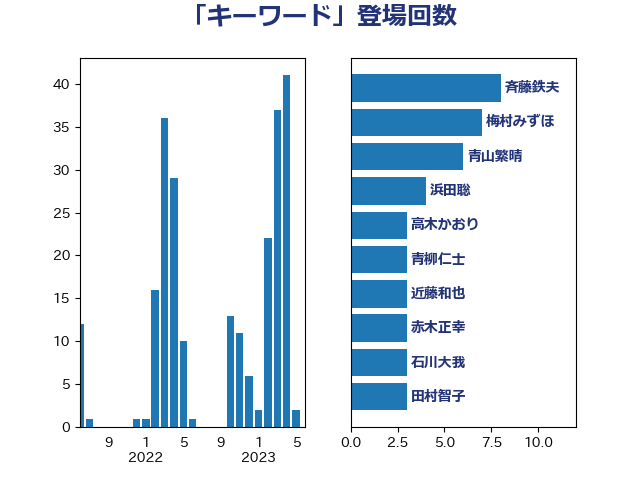

単語「キーワード」

| 斉藤鉄夫 | 公明党 | 8 回 |
| 梅村みずほ | 日本維新の会 | 7 回 |
| 青山繁晴 | 自由民主党 | 6 回 |
| 浜田聡 | NHK党 | 4 回 |
| 高木かおり | 日本維新の会 | 3 回 |
| 青柳仁士 | 日本維新の会 | 3 回 |
| 近藤和也 | 立憲民主党 | 3 回 |
| 赤木正幸 | 日本維新の会 | 3 回 |
| 石川大我 | 立憲民主党 | 3 回 |
| 田村智子 | 日本共産党 | 3 回 |
| 森田俊和 | 立憲民主党 | 3 回 |
| 梅谷守 | 立憲民主党 | 3 回 |
| 岡本あき子 | 立憲民主党 | 3 回 |
| 山口壯 | 自由民主党 | 3 回 |
| 小西洋之 | 立憲民主党 | 3 回 |
| 吉田豊史 | 無所属 | 3 回 |
| 古川康 | 自由民主党 | 3 回 |
| 三上えり | 立憲民主党 | 3 回 |
| 高良鉄美 | 無所属 | 2 回 |
| 鎌田さゆり | 立憲民主党 | 2 回 |
| 鈴木貴子 | 自由民主党 | 2 回 |
| 金村龍那 | 日本維新の会 | 2 回 |
| 重徳和彦 | 立憲民主党 | 2 回 |
| 茂木敏充 | 自由民主党 | 2 回 |
| 竹内真二 | 公明党 | 2 回 |
| 窪田哲也 | 公明党 | 2 回 |
| 浅野哲 | 国民民主党 | 2 回 |
| 津島淳 | 自由民主党 | 2 回 |
| 河西宏一 | 公明党 | 2 回 |
| 櫻井周 | 立憲民主党 | 2 回 |
| 榛葉賀津也 | 国民民主党 | 2 回 |
| 梅村聡 | 日本維新の会 | 2 回 |
| 山本佐知子 | 自由民主党 | 2 回 |
| 山崎誠 | 立憲民主党 | 2 回 |
| 小沼巧 | 立憲民主党 | 2 回 |
| 八木哲也 | 自由民主党 | 2 回 |
| 伊藤渉 | 公明党 | 2 回 |
| 伊藤孝恵 | 国民民主党 | 2 回 |
| 上田英俊 | 自由民主党 | 2 回 |
| 三浦靖 | 自由民主党 | 2 回 |
| 高木真理 | 立憲民主党 | 1 回 |
| 高木啓 | 自由民主党 | 1 回 |
| 馬場雄基 | 立憲民主党 | 1 回 |
| 長友慎治 | 国民民主党 | 1 回 |
| 鈴木義弘 | 国民民主党 | 1 回 |
| 金子恵美 | 立憲民主党 | 1 回 |
| 金子俊平 | 自由民主党 | 1 回 |
| 野村哲郎 | 自由民主党 | 1 回 |
| 輿水恵一 | 公明党 | 1 回 |
| 谷合正明 | 公明党 | 1 回 |
| 若林洋平 | 自由民主党 | 1 回 |
| 若松謙維 | 公明党 | 1 回 |
| 若宮健嗣 | 自由民主党 | 1 回 |
| 芳賀道也 | 国民民主党 | 1 回 |
| 舞立昇治 | 自由民主党 | 1 回 |
| 自見はなこ | 自由民主党 | 1 回 |
| 緒方林太郎 | 無所属 | 1 回 |
| 米山隆一 | 立憲民主党 | 1 回 |
| 竹内譲 | 公明党 | 1 回 |
| 穀田恵二 | 日本共産党 | 1 回 |
| 稲津久 | 公明党 | 1 回 |
| 神谷宗幣 | 参政党 | 1 回 |
| 礒崎哲史 | 国民民主党 | 1 回 |
| 石川香織 | 立憲民主党 | 1 回 |
| 石垣のりこ | 立憲民主党 | 1 回 |
| 石原正敬 | 自由民主党 | 1 回 |
| 矢倉克夫 | 公明党 | 1 回 |
| 田村貴昭 | 日本共産党 | 1 回 |
| 田村まみ | 国民民主党 | 1 回 |
| 田嶋要 | 立憲民主党 | 1 回 |
| 田中健 | 国民民主党 | 1 回 |
| 熊谷裕人 | 立憲民主党 | 1 回 |
| 浜地雅一 | 公明党 | 1 回 |
| 沢田良 | 日本維新の会 | 1 回 |
| 池下卓 | 日本維新の会 | 1 回 |
| 櫛渕万里 | れいわ新選組 | 1 回 |
| 横山信一 | 公明党 | 1 回 |
| 森本真治 | 立憲民主党 | 1 回 |
| 柴田巧 | 日本維新の会 | 1 回 |
| 松山政司 | 自由民主党 | 1 回 |
| 杉尾秀哉 | 立憲民主党 | 1 回 |
| 平将明 | 自由民主党 | 1 回 |
| 岸真紀子 | 立憲民主党 | 1 回 |
| 岸田文雄 | 自由民主党 | 1 回 |
| 岡田直樹 | 自由民主党 | 1 回 |
| 山本順三 | 自由民主党 | 1 回 |
| 小森卓郎 | 自由民主党 | 1 回 |
| 小林鷹之 | 自由民主党 | 1 回 |
| 小山展弘 | 立憲民主党 | 1 回 |
| 宮本岳志 | 日本共産党 | 1 回 |
| 奥野総一郎 | 立憲民主党 | 1 回 |
| 太栄志 | 立憲民主党 | 1 回 |
| 天畠大輔 | れいわ新選組 | 1 回 |
| 大西健介 | 立憲民主党 | 1 回 |
| 國重徹 | 公明党 | 1 回 |
| 吉良よし子 | 日本共産党 | 1 回 |
| 古賀友一郎 | 自由民主党 | 1 回 |
| 古川元久 | 国民民主党 | 1 回 |
| 加田裕之 | 自由民主党 | 1 回 |
| 保岡宏武 | 自由民主党 | 1 回 |
| 伴野豊 | 立憲民主党 | 1 回 |
| 仁木博文 | 無所属 | 1 回 |
| 中村裕之 | 自由民主党 | 1 回 |
| 中曽根康隆 | 自由民主党 | 1 回 |
| 中川正春 | 立憲民主党 | 1 回 |
| 中司宏 | 日本維新の会 | 1 回 |
| 上田清司 | 国民民主党 | 1 回 |
| 上月良祐 | 自由民主党 | 1 回 |
| 三浦信祐 | 公明党 | 1 回 |